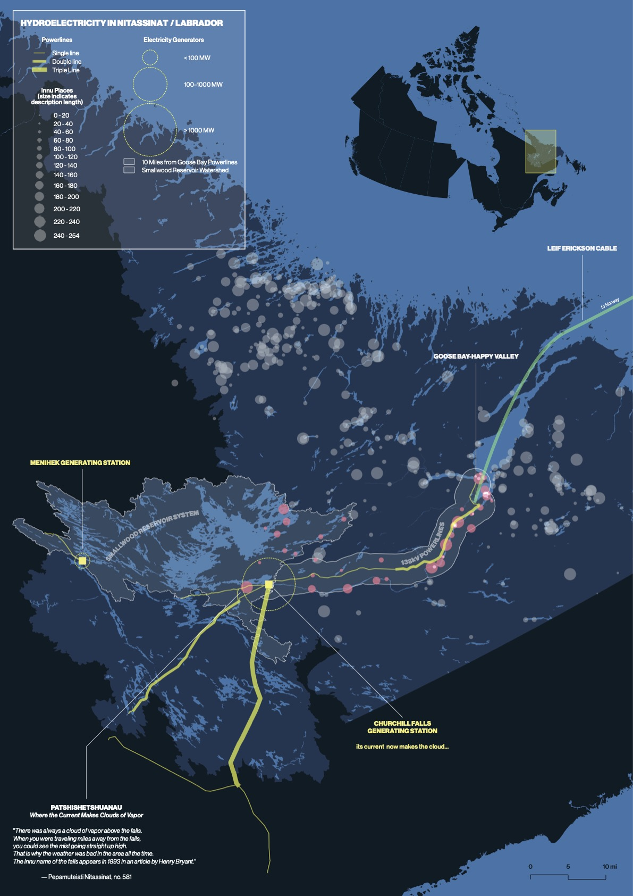
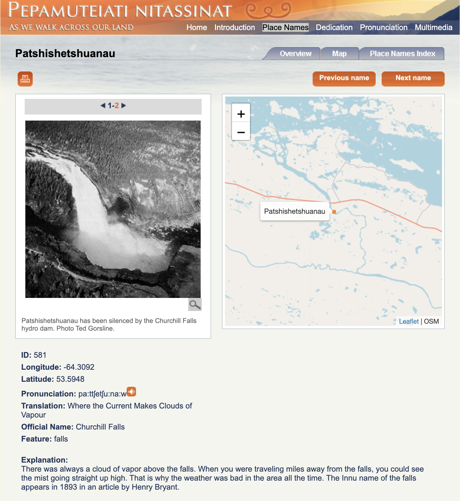

ELI HARRELL
Nitassinan Dictionary
This map overlays the major components of Labrador, Canada's electical grid on the distribution of
Innu place names
scraped from the tribe's toponymy website, Pepamuteiati nitassinat.
This website is the most up-to-date version of a series of projects to collect
Innu knowledge of the territory which began in the mid-1970s. The locations, names, and
descriptions of each place are largely sourced from a 1980 community-mapping project called LAMAP,
where large-scale maps were printed and laid out in on the floors of community centers in Sheshatshiu
(near Goose Bay) and Utshimassit (north along the coast). On them, elder hunters were invited to mark
campsites, hunting grounds, and birth places. More data were added, and others validated, in a 1994
project. The website was put together after 2006.
See
"The Labrador Toponymy Project and its Relevance to Archaeologists"
for more information on this source.
click images to view them at full size.
|
My map. The size of circles indicating Innu places of interest is a function of the length of
their dictionary entries, in characters, which I used as a proxy for the importance of that
place to Innu traditions.
With this, I intended to challenge the narrative of remoteness associated with this region by visualizing the density of Innu knowledge. This further reveals the scale of disruptions wrought by electricity generation and transmission infrastructure on Innu lifeways, especially along the Churchill River corridor. |
 |
| Example entry for Patshishetshuanau (Churchill Falls). For my purposes, each page includes the latitude, longitude, and an note of varying detail about the significance of the place. |  |